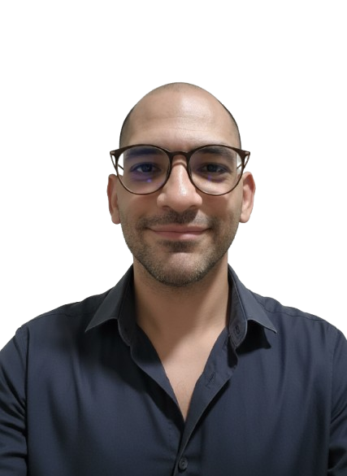

Igor Tude
Cientista de Dados · Python · ML · Desenvolvimento
De Direito e Educação Física à Ciência de Dados
Formado em Direito e Educação Física, em transição estruturada para Ciência de Dados. Não vim da TI — e isso é justamente o diferencial.
O raciocínio analítico do Direito (argumentação, causalidade, evidências) somado à mentalidade orientada a resultados da Educação Física formam uma base que poucos profissionais de dados têm.
Na prática: desenvolvi como freelancer o site institucional e o sistema de gestão completo da CT No Limits — em Python, para Windows e macOS. Código comercializado.
Background em TI (servidores, banco de dados, PHP). Hoje curso Ciência de Dados (2º semestre) e entrego código em produção.

igor_tude.pngRaciocínio Jurídico
Argumentação, causalidade e análise de evidências aplicadas a dados.
Foco em Resultado
Orientação a metas, desempenho e métricas de progresso mensurável.
Já Entregou Código
Não é só teoria — sistemas em produção e código comercializado.
Cada passo construiu um diferencial
De Direito à Ciência de Dados — cada etapa construiu uma habilidade que agora aplico a dados e tecnologia.
Direito
Raciocínio analítico, argumentação e análise de evidências.
Educação Física
Orientação a resultados, métricas de desempenho e progresso.
Transição para Dados
Python, SQL, Machine Learning — em ritmo acelerado.
Cientista de Dados
Análise + resultado + código convergindo.
Direito me deu raciocínio analítico. Educação Física me deu foco em resultado. Transição acelerada me deu código e entrega real. Cientista de Dados é onde tudo converge.
Stack Técnica
Linguagens, ferramentas e frameworks que uso no dia a dia.
Linguagens & Runtime
IA & Ciência de Dados
Automação & Web
Ferramentas & Infra
Projetos no GitHub
Código aberto, experimentos, trabalhos acadêmicos e sistemas em produção.
Onde já atuei
- Site institucional da CT No Limits
- Sistema de gestão Python (alunos, agendamentos, check-in) — código comercializado
- Dashboard RAG com Streamlit
- Gestão de servidores (Small Orange)
- Manipulação de banco de dados web
- Desenvolvimento PHP
Educação & Certificados
Tecnólogo em Ciência de Dados
Universidade Anhanguera — Análise, estatística, ML.
Direito
Raciocínio analítico, argumentação e tomada de decisão.
Educação Física
Performance, métricas e orientação a resultados.
Cursos & Certificações
Análise de Dados (Gran), ML (USP/ESALQ), SQL e Python (TeoMeWhy), Estatística.
Disponível para estágio & oportunidades
Estou em transição ativa para Ciência de Dados. Aberto a oportunidades como Jr, Analista ou Dev Python.